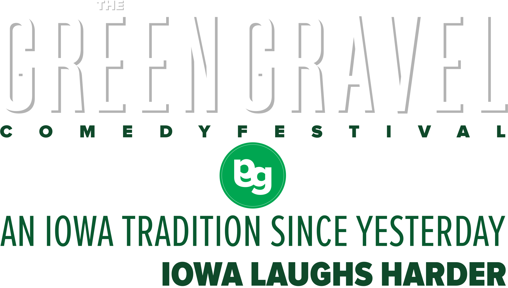

Thanks to everybody who pitched in for our IndieGoGo campaign and made it a success! We are extremely humbled to be given contributions from comedy fans all over the country and can’t wait to put those funds to work!
We’re proud to announce our very first headliner: Jackie Kashian! Jackie is bringing her incredible stand-up and geek-tastic podcast The Dork Forest to Green Gravel! She's appeared on "Conan", "This American Life" and many more!
WE’RE NOW ACCEPTING SUBMISSIONS for stand-up, sketch, improv and podcasts, in addition to comedy shorts. Please see our “Submit” page and our Facebook page for details!
The Green Gravel Comedy Festival is a three-day alternative comedy festival in multiple venues in the town of Toledo, Iowa. Offering affordable, accessible shows and workshops in alternative comedy, Green Gravel aims to bring the finest comedic voices to the heart of Iowa. Our fest is made possible by the community of Toledo in conjunction with sponsors, partnerships and volunteer contributions. It’s time. Because Iowa laughs harder.
We’re proud to bring an array of the finest stand-up, podcast, improv and sketch comedians to Toledo, and we don’t believe that patrons should have to pay an arm and a leg to do it. That’s why we’re offering affordable options for ticketing: you can pop in for a single show, buy a day pass or snap up the Green Graveller weekend pass. You won’t be getting comedy-clubbed to death by minimum-drink charges; furthermore, we’ll be offering drink/merch specials as a thank-you to the folks who make the gravel strip comedy trip!
Hey, we’re doing a new thing here, there’s bound to be some questions that pop up! Hit us up for any questions, concerns, booking or vendor issues:
Shows will be taking place starting at 7pm on Friday, March 28th! The fest wraps up the evening of Sunday, March 30th! Full schedule to come after we announce ticket presales and gather up submissions, so keep it tuned to this space!
As a public service, we will be offering a free Q&A session with our March 29th Wieting Theater headliner on that afternoon courtesy of the Wieting Theater Guild!
We will be offering brief workshops in stand-up, sketch and improvisational comedy from masters of the craft! Whether you’re curious about the craft of a comedy as a fan or are an experienced performer looking to expand your skill set, Green Gravel is proud to offer these courses to encourage the training and growth of comedy in the greater Iowa community.
We’re proud to be offering our Fundamentals of Stand-up course as a free courtesy of Green Gravel; in addition, we will be pricing our improv/sketch classes with rates that are sensible and accessible for participants.
Classes will run from 10 am through 1 pm on Saturday, March 29th and Sunday, March 30th. Instructors and enrollment announcements are coming shortly!
There are a number of venues that showcase comedy in Iowa - from bars to comedy clubs to talent shows. Our goal is to give a voice to the performers that have yearned to grace those stages as much as those who have been prominently featured there. We welcome diverse submissions in the realm of stand-up, podcasts, sketch and improv comedy! This is your chance to showcase your very finest work!
The Green Gravel Comedy fest will be a weekend of curated comedy madness running from March 28-30, 2014! Boasting screenings, live stand-up, improv, podcast and sketch material, Toledo will be bustling with fans and creators alike. We look forward to facilitating a platform for comedy creators to share their work while networking, partying and influencing each other in ways previously unimaginable!
For specifics on submitting to Green Gravel, please visit the “Notes” section of our beloved Facebook page:
FacebookWe’re proud to be partnering with businesses in the Central Iowa region and beyond to deliver a fest experience that will make your gravel strip comedy trip one to remember!
The Super 8 in Toledo is offering Green Gravel ticket holders an exclusive rate of $65 per night! Simply contact their office at (641) 484-5888, reserve your room and provide proof of purchase at check-in and get ready to laugh!
Maybe you weren’t able to contribute to our IndieGoGo campaign a while back? Hopefully you’re feeling warm and fuzzy about us offering a free stand-up workshop along and a free headliner Q&A and want to help. Each and every dollar you contribute goes towards keeping the gravel green and fostering the growth of comedy in Iowa! Do your part! Please and thank you.